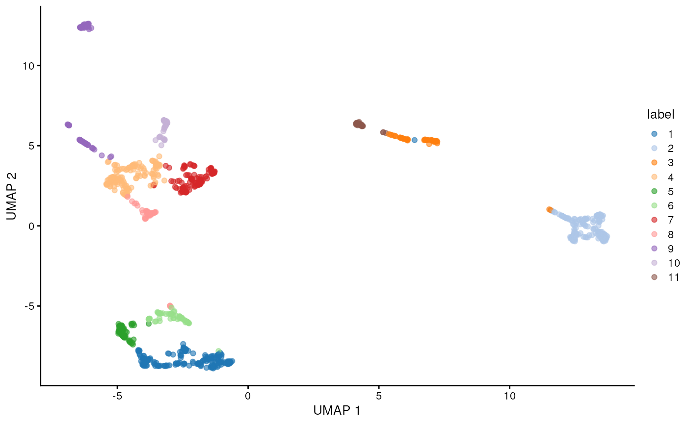

Data retrieval
sce <- WTChimeraData(samples = 5, type = "processed")
sce## class: SingleCellExperiment
## dim: 29453 2411
## metadata(0):
## assays(1): counts
## rownames(29453): ENSMUSG00000051951 ENSMUSG00000089699 ...
## ENSMUSG00000095742 tomato-td
## rowData names(2): ENSEMBL SYMBOL
## colnames(2411): cell_9769 cell_9770 ... cell_12178 cell_12179
## colData names(11): cell barcode ... doub.density sizeFactor
## reducedDimNames(2): pca.corrected.E7.5 pca.corrected.E8.5
## mainExpName: NULL
## altExpNames(0):To speed up the computations, we subsample the dataset to 1,000 cells.
Preprocessing
sce <- logNormCounts(sce)
sce <- runPCA(sce)Clustering
Clustering is an unsupervised learning procedure that is used to empirically define groups of cells with similar expression profiles. Its primary purpose is to summarize complex scRNA-seq data into a digestible format for human interpretation. This allows us to describe population heterogeneity in terms of discrete labels that are easily understood, rather than attempting to comprehend the high-dimensional manifold on which the cells truly reside. After annotation based on marker genes, the clusters can be treated as proxies for more abstract biological concepts such as cell types or states.
Popularized by its use in Seurat, graph-based clustering is a flexible and scalable technique for clustering large scRNA-seq datasets. We first build a graph where each node is a cell that is connected to its nearest neighbors in the high-dimensional space. Edges are weighted based on the similarity between the cells involved, with higher weight given to cells that are more closely related. We then apply algorithms to identify “communities” of cells that are more connected to cells in the same community than they are to cells of different communities. Each community represents a cluster that we can use for downstream interpretation.
Here, we use the clusterCells() function from the scran package to
perform graph-based clustering using the Louvain
algorithm for community detection. All calculations are performed
using the top PCs to take advantage of data compression and denoising.
This function returns a vector containing cluster assignments for each
cell in our SingleCellExperiment object.
colLabels(sce) <- clusterCells(sce, use.dimred = "PCA",
BLUSPARAM = NNGraphParam(cluster.fun = "louvain"))
table(colLabels(sce))##
## 1 2 3 4 5 6 7 8 9 10 11
## 192 160 60 142 63 60 108 44 91 41 39We assign the cluster assignments back into our
SingleCellExperiment object as a factor in the
column metadata. This allows us to conveniently visualize the
distribution of clusters in eg. a t-SNE or a UMAP.
sce <- runUMAP(sce, dimred = "PCA")
plotReducedDim(sce, "UMAP", color_by = "label")
Marker gene detection
To interpret clustering results as obtained in the previous section, we identify the genes that drive separation between clusters. These marker genes allow us to assign biological meaning to each cluster based on their functional annotation. In the simplest case, we have a priori knowledge of the marker genes associated with particular cell types, allowing us to treat the clustering as a proxy for cell type identity.
The most straightforward approach to marker gene detection involves testing for differential expression between clusters. If a gene is strongly DE between clusters, it is likely to have driven the separation of cells in the clustering algorithm.
Here, we perform a Wilcoxon rank sum test against a log2 fold change threshold of 1, focusing on up-regulated (positive) markers in one cluster when compared to another cluster.
rownames(sce) <- rowData(sce)$SYMBOL
markers <- findMarkers(sce, test.type = "wilcox", direction = "up", lfc = 1)
markers## List of length 11
## names(11): 1 2 3 4 5 6 7 8 9 10 11The resulting object contains a sorted marker gene list for each cluster, in which the top genes are those that contribute the most to the separation of that cluster from mall other clusters.
Here, we inspect the ranked marker gene list for the first cluster.
markers[[1]]## DataFrame with 29453 rows and 14 columns
## Top p.value FDR summary.AUC AUC.2 AUC.3
## <integer> <numeric> <numeric> <numeric> <numeric> <numeric>
## Ptn 1 1.13058e-58 3.32991e-54 0.991178 0.991178 0.989931
## Slc2a3 1 5.11021e-20 2.38907e-17 0.788379 0.788379 0.586111
## Cdca7 2 7.33552e-13 2.48337e-10 0.867759 0.712500 0.597135
## Sox2 2 6.93903e-27 4.75292e-24 0.822624 0.822624 0.825694
## Crabp2 2 1.67985e-43 2.74870e-40 0.923958 0.923958 0.926997
## ... ... ... ... ... ... ...
## AC125149.2 29448 1 1 0 0 0
## AC125149.4 29449 1 1 0 0 0
## AC234645.1 29450 1 1 0 0 0
## AC168977.2 29451 1 1 0 0 0
## Vmn2r122 29453 1 1 0 0 0
## AUC.4 AUC.5 AUC.6 AUC.7 AUC.8 AUC.9
## <numeric> <numeric> <numeric> <numeric> <numeric> <numeric>
## Ptn 0.930935 0.7943948 0.8567708 0.599489 0.919626 0.966003
## Slc2a3 0.530773 0.0223214 0.0559896 0.809028 0.703362 0.298306
## Cdca7 0.303844 0.0976356 0.2732639 0.357350 0.207860 0.659570
## Sox2 0.799039 0.3102679 0.5137153 0.795380 0.805634 0.822745
## Crabp2 0.778976 0.3044808 0.6057292 0.758247 0.625710 0.931319
## ... ... ... ... ... ... ...
## AC125149.2 0 0 0 0 0 0
## AC125149.4 0 0 0 0 0 0
## AC234645.1 0 0 0 0 0 0
## AC168977.2 0 0 0 0 0 0
## Vmn2r122 0 0 0 0 0 0
## AUC.10 AUC.11
## <numeric> <numeric>
## Ptn 0.980183 0.990919
## Slc2a3 0.637322 0.690438
## Cdca7 0.867759 0.774973
## Sox2 0.801448 0.822382
## Crabp2 0.816184 0.828125
## ... ... ...
## AC125149.2 0 0
## AC125149.4 0 0
## AC234645.1 0 0
## AC168977.2 0 0
## Vmn2r122 0 0The Top field provides the the minimum rank across all
pairwise comparisons. The p.value field provides the
combined p-value across all comparisons, and the
FDR field the BH-adjusted p-value for each gene.
The summary.AUC provides area under the curve (here the
concordance probability) from the comparison with the lowest
p-value, the AUC.n fields provide the AUC for each
pairwise comparison. The AUC is the probability that a randomly selected
cell in cluster A has a greater expression of gene X
than a randomly selected cell in B.
We can then inspect the top marker genes for the first cluster using
the plotExpression function from the scater package.
top.markers <- head(rownames(markers[[1]]))
plotExpression(sce, features = top.markers, x = "label", color_by = "label")
Cell type annotation
The most challenging task in scRNA-seq data analysis is arguably the interpretation of the results. Obtaining clusters of cells is fairly straightforward, but it is more difficult to determine what biological state is represented by each of those clusters. Doing so requires us to bridge the gap between the current dataset and prior biological knowledge, and the latter is not always available in a consistent and quantitative manner. Indeed, even the concept of a “cell type” is not clearly defined, with most practitioners possessing a “I’ll know it when I see it” intuition that is not amenable to computational analysis. As such, interpretation of scRNA-seq data is often manual and a common bottleneck in the analysis workflow.
To expedite this step, we can use various computational approaches that exploit prior information to assign meaning to an uncharacterized scRNA-seq dataset. The most obvious sources of prior information are the curated gene sets associated with particular biological processes, e.g., from the Gene Ontology (GO) or the Kyoto Encyclopedia of Genes and Genomes (KEGG) collections. Alternatively, we can directly compare our expression profiles to published reference datasets where each sample or cell has already been annotated with its putative biological state by domain experts. Here, we will demonstrate both approaches on the wild-type chimera dataset.
Assigning cell labels from reference data
A conceptually straightforward annotation approach is to compare the single-cell expression profiles with previously annotated reference datasets. Labels can then be assigned to each cell in our uncharacterized test dataset based on the most similar reference sample(s), for some definition of “similar”. This is a standard classification challenge that can be tackled by standard machine learning techniques such as random forests and support vector machines. Any published and labelled RNA-seq dataset (bulk or single-cell) can be used as a reference, though its reliability depends greatly on the expertise of the original authors who assigned the labels in the first place.
In this section, we will demonstrate the use of the SingleR method for cell type annotation Aran et al., 2019. This method assigns labels to cells based on the reference samples with the highest Spearman rank correlations, using only the marker genes between pairs of labels to focus on the relevant differences between cell types. It also performs a fine-tuning step for each cell where the correlations are recomputed with just the marker genes for the top-scoring labels. This aims to resolve any ambiguity between those labels by removing noise from irrelevant markers for other labels. Further details can be found in the SingleR book from which most of the examples here are derived.
ref <- EmbryoAtlasData(samples = 29)
ref## class: SingleCellExperiment
## dim: 29452 7569
## metadata(0):
## assays(1): counts
## rownames(29452): ENSMUSG00000051951 ENSMUSG00000089699 ...
## ENSMUSG00000096730 ENSMUSG00000095742
## rowData names(2): ENSEMBL SYMBOL
## colnames(7569): cell_95727 cell_95728 ... cell_103294 cell_103295
## colData names(17): cell barcode ... colour sizeFactor
## reducedDimNames(2): pca.corrected umap
## mainExpName: NULL
## altExpNames(0):
table(ref$stage)##
## E8.5
## 7569To speed up the computations, we subsample the dataset to 1,000 cells.
##
## Forebrain/Midbrain/Hindbrain Erythroid3
## 131 75
## Paraxial mesoderm NMP
## 69 51
## ExE mesoderm Surface ectoderm
## 49 47
## Allantois Mesenchyme
## 46 45
## Spinal cord Pharyngeal mesoderm
## 45 41
## ExE endoderm Neural crest
## 38 35
## Gut Haematoendothelial progenitors
## 30 27
## Intermediate mesoderm Cardiomyocytes
## 27 26
## Somitic mesoderm Endothelium
## 25 23
## Erythroid2 Def. endoderm
## 11 3
## Erythroid1 Blood progenitors 1
## 2 1
## Blood progenitors 2 Caudal Mesoderm
## 1 1
## PGC
## 1
ref <- logNormCounts(ref)Some cleaning - remove cells of the reference dataset for which the cell type annotation is missing.
nna <- !is.na(ref$celltype)
ref <- ref[,nna]Also remove cell types of very low abundance (here less than 10 cells) to remove noise prior to subsequent annotation tasks.
Restrict to genes shared between query and reference dataset.
rownames(ref) <- rowData(ref)$SYMBOL
isect <- intersect(rownames(sce), rownames(ref))
sce <- sce[isect,]
ref <- ref[isect,]Convert sparse assay matrices to regular dense matrices for input to SingleR.
res <- SingleR(test = sce.mat, ref = ref.mat, labels = ref$celltype)
res## DataFrame with 1000 rows and 4 columns
## scores labels delta.next
## <matrix> <character> <numeric>
## cell_11995 0.348586:0.335451:0.314515:... Forebrain/Midbrain/H.. 0.1285110
## cell_10294 0.273570:0.260013:0.298932:... Erythroid3 0.1381951
## cell_9963 0.328538:0.291288:0.475611:... Endothelium 0.2193295
## cell_11610 0.281161:0.269245:0.299961:... Erythroid3 0.0359215
## cell_10910 0.422454:0.346897:0.355947:... ExE mesoderm 0.0984285
## ... ... ... ...
## cell_11597 0.323805:0.292967:0.300485:... NMP 0.1663369
## cell_9807 0.464466:0.374189:0.381698:... Mesenchyme 0.0833019
## cell_10095 0.341721:0.288215:0.485324:... Endothelium 0.0889931
## cell_11706 0.267487:0.240215:0.286012:... Erythroid2 0.0350557
## cell_11860 0.345786:0.343437:0.313994:... Forebrain/Midbrain/H.. 0.0117001
## pruned.labels
## <character>
## cell_11995 Forebrain/Midbrain/H..
## cell_10294 Erythroid3
## cell_9963 Endothelium
## cell_11610 Erythroid3
## cell_10910 ExE mesoderm
## ... ...
## cell_11597 NMP
## cell_9807 Mesenchyme
## cell_10095 Endothelium
## cell_11706 Erythroid2
## cell_11860 Forebrain/Midbrain/H..We inspect the results using a heatmap of the per-cell and label scores. Ideally, each cell should exhibit a high score in one label relative to all of the others, indicating that the assignment to that label was unambiguous. This is largely the case for mesenchyme and endothelial cells, whereas we see expectedly more ambiguity between the two erythroid cell populations.
plotScoreHeatmap(res)We also compare the cell type assignments with the clustering results to determine the identity of each cluster. Here, several cell type classes are nested within the same cluster, indicating that these clusters are composed of several transcriptomically similar cell populations (such as cluster 4 and 6). On the other hand, there are also instances where we have several clusters for the same cell type, indicating that the clustering represents finer subdivisions within these cell types.
library(pheatmap)
tab <- table(anno = res$pruned.labels, cluster = colLabels(sce))
pheatmap(log2(tab + 10), color = colorRampPalette(c("white", "blue"))(101))As it so happens, we are in the fortunate position where our test dataset also contains independently defined labels. We see strong consistency between the two sets of labels, indicating that our automatic annotation is comparable to that generated manually by domain experts.
tab <- table(res$pruned.labels, sce$celltype.mapped)
pheatmap(log2(tab + 10), color = colorRampPalette(c("white", "blue"))(101))Assigning cell labels from gene sets
A related strategy is to explicitly identify sets of marker genes that are highly expressed in each individual cell. This does not require matching of individual cells to the expression values of the reference dataset, which is faster and more convenient when only the identities of the markers are available. We demonstrate this approach using cell type markers derived from the mouse embryo atlas dataset.
library(scran)
wilcox.z <- pairwiseWilcox(ref, ref$celltype, lfc = 1, direction = "up")
markers.z <- getTopMarkers(wilcox.z$statistics, wilcox.z$pairs,
pairwise = FALSE, n = 50)
lengths(markers.z)## Allantois Cardiomyocytes
## 106 106
## Endothelium Erythroid2
## 103 54
## Erythroid3 ExE endoderm
## 84 102
## ExE mesoderm Forebrain/Midbrain/Hindbrain
## 97 97
## Gut Haematoendothelial progenitors
## 90 71
## Intermediate mesoderm Mesenchyme
## 70 118
## Neural crest NMP
## 66 91
## Paraxial mesoderm Pharyngeal mesoderm
## 88 85
## Somitic mesoderm Spinal cord
## 86 91
## Surface ectoderm
## 92Our test dataset will be as before the wild-type chimera dataset.
sce## class: SingleCellExperiment
## dim: 29411 1000
## metadata(0):
## assays(2): counts logcounts
## rownames(29411): Xkr4 Gm1992 ... Vmn2r122 CAAA01147332.1
## rowData names(2): ENSEMBL SYMBOL
## colnames(1000): cell_11995 cell_10294 ... cell_11706 cell_11860
## colData names(12): cell barcode ... sizeFactor label
## reducedDimNames(4): pca.corrected.E7.5 pca.corrected.E8.5 PCA UMAP
## mainExpName: NULL
## altExpNames(0):We use the AUCell package to identify marker sets that are highly expressed in each cell. This method ranks genes by their expression values within each cell and constructs a response curve of the number of genes from each marker set that are present with increasing rank. It then computes the area under the curve (AUC) for each marker set, quantifying the enrichment of those markers among the most highly expressed genes in that cell. This is roughly similar to performing a Wilcoxon rank sum test between genes in and outside of the set, but involving only the top ranking genes by expression in each cell.
library(GSEABase)
all.sets <- lapply(names(markers.z),
function(x) GeneSet(markers.z[[x]], setName = x))
all.sets <- GeneSetCollection(all.sets)
all.sets## GeneSetCollection
## names: Allantois, Cardiomyocytes, ..., Surface ectoderm (19 total)
## unique identifiers: Prrx2, Spin2c, ..., Igf2bp3 (560 total)
## types in collection:
## geneIdType: NullIdentifier (1 total)
## collectionType: NullCollection (1 total)
library(AUCell)
rankings <- AUCell_buildRankings(as.matrix(counts(sce)),
plotStats = FALSE, verbose = FALSE)
cell.aucs <- AUCell_calcAUC(all.sets, rankings)
results <- t(assay(cell.aucs))
head(results)## gene sets
## cells Allantois Cardiomyocytes Endothelium Erythroid2 Erythroid3
## cell_11995 0.21994609 0.2336827 0.1947563 0.12228508 0.1639749
## cell_10294 0.10066221 0.1246414 0.1104634 0.60732017 0.6081721
## cell_9963 0.34273069 0.3158431 0.5407815 0.13588372 0.1797007
## cell_11610 0.08244651 0.1340388 0.1048735 0.57892981 0.5706619
## cell_10910 0.31763336 0.2784001 0.2445795 0.08175859 0.1354818
## cell_11021 0.20549732 0.2320122 0.1869839 0.11351012 0.1769588
## gene sets
## cells ExE endoderm ExE mesoderm Forebrain/Midbrain/Hindbrain Gut
## cell_11995 0.06053637 0.4371076 0.6319109 0.3779960
## cell_10294 0.06369959 0.1900184 0.2670988 0.1482988
## cell_9963 0.09466189 0.4165978 0.4972886 0.3805059
## cell_11610 0.05720738 0.2060333 0.2785028 0.1466698
## cell_10910 0.11787498 0.5770948 0.5721069 0.4450836
## cell_11021 0.09285926 0.4736976 0.6011933 0.3993608
## gene sets
## cells Haematoendothelial progenitors Intermediate mesoderm Mesenchyme
## cell_11995 0.3329538 0.5396029 0.2456757
## cell_10294 0.1621829 0.1781659 0.1078670
## cell_9963 0.6010306 0.4623277 0.3566887
## cell_11610 0.1526329 0.1968055 0.1118536
## cell_10910 0.4333710 0.5481614 0.3512731
## cell_11021 0.3336212 0.5197592 0.2403682
## gene sets
## cells Neural crest NMP Paraxial mesoderm Pharyngeal mesoderm
## cell_11995 0.6535231 0.4841026 0.5510547 0.5076289
## cell_10294 0.2840264 0.2113283 0.2192031 0.2049349
## cell_9963 0.5374756 0.3740042 0.5007010 0.4618718
## cell_11610 0.2949987 0.2235049 0.2348724 0.2134701
## cell_10910 0.5472885 0.5225294 0.5506325 0.5564014
## cell_11021 0.5863399 0.5731637 0.4992671 0.4707530
## gene sets
## cells Somitic mesoderm Spinal cord Surface ectoderm
## cell_11995 0.4654095 0.5807133 0.5251957
## cell_10294 0.2141816 0.2290110 0.1874113
## cell_9963 0.4307335 0.4373858 0.4173470
## cell_11610 0.2339673 0.2564642 0.2054802
## cell_10910 0.5179489 0.5167149 0.5049140
## cell_11021 0.5186006 0.5526277 0.5052879We assign cell type identity to each cell in the test dataset by taking the marker set with the top AUC as the label for that cell. Our new labels mostly agree with the original annotation (and, thus, also with the reference-based annotation). Instances where the original annotation is divided into several new label groups typically points to large overlaps in their marker sets. In the absence of prior annotation, a more general diagnostic check is to compare the assigned labels to cluster identities, under the expectation that most cells of a single cluster would have the same label (or, if multiple labels are present, they should at least represent closely related cell states).
##
## new.labels Allantois Blood progenitors 1
## Allantois 28 0
## Cardiomyocytes 0 0
## Endothelium 0 0
## Erythroid2 0 0
## Erythroid3 0 0
## ExE mesoderm 0 0
## Forebrain/Midbrain/Hindbrain 1 0
## Gut 0 0
## Haematoendothelial progenitors 1 0
## Intermediate mesoderm 0 0
## Mesenchyme 0 0
## Neural crest 11 4
## NMP 0 0
## Paraxial mesoderm 5 0
## Pharyngeal mesoderm 0 0
## Somitic mesoderm 0 0
## Spinal cord 0 0
## Surface ectoderm 0 0
##
## new.labels Blood progenitors 2 Cardiomyocytes
## Allantois 0 0
## Cardiomyocytes 0 27
## Endothelium 0 0
## Erythroid2 1 0
## Erythroid3 0 0
## ExE mesoderm 0 0
## Forebrain/Midbrain/Hindbrain 0 0
## Gut 0 0
## Haematoendothelial progenitors 0 0
## Intermediate mesoderm 0 0
## Mesenchyme 0 0
## Neural crest 6 1
## NMP 0 0
## Paraxial mesoderm 0 4
## Pharyngeal mesoderm 0 6
## Somitic mesoderm 0 0
## Spinal cord 0 0
## Surface ectoderm 0 0
##
## new.labels Caudal epiblast Caudal Mesoderm Def. endoderm
## Allantois 0 0 0
## Cardiomyocytes 0 0 0
## Endothelium 0 0 0
## Erythroid2 0 0 0
## Erythroid3 0 0 0
## ExE mesoderm 0 0 0
## Forebrain/Midbrain/Hindbrain 1 0 2
## Gut 0 0 0
## Haematoendothelial progenitors 0 0 0
## Intermediate mesoderm 0 0 0
## Mesenchyme 0 0 0
## Neural crest 0 0 1
## NMP 0 0 0
## Paraxial mesoderm 0 0 1
## Pharyngeal mesoderm 0 0 0
## Somitic mesoderm 0 1 1
## Spinal cord 0 0 0
## Surface ectoderm 0 0 0
##
## new.labels Doublet Endothelium Erythroid1 Erythroid2
## Allantois 0 0 0 0
## Cardiomyocytes 0 0 0 0
## Endothelium 0 13 0 0
## Erythroid2 0 0 14 21
## Erythroid3 0 0 6 5
## ExE mesoderm 0 0 0 0
## Forebrain/Midbrain/Hindbrain 6 0 0 0
## Gut 0 0 0 0
## Haematoendothelial progenitors 0 19 0 0
## Intermediate mesoderm 13 0 0 0
## Mesenchyme 0 0 0 0
## Neural crest 20 1 3 0
## NMP 0 0 0 0
## Paraxial mesoderm 5 0 0 0
## Pharyngeal mesoderm 1 0 0 0
## Somitic mesoderm 1 0 0 0
## Spinal cord 1 0 0 0
## Surface ectoderm 0 0 0 0
##
## new.labels Erythroid3 ExE mesoderm
## Allantois 0 0
## Cardiomyocytes 0 0
## Endothelium 0 0
## Erythroid2 51 0
## Erythroid3 49 0
## ExE mesoderm 0 23
## Forebrain/Midbrain/Hindbrain 0 1
## Gut 0 0
## Haematoendothelial progenitors 0 0
## Intermediate mesoderm 0 16
## Mesenchyme 0 0
## Neural crest 0 17
## NMP 0 0
## Paraxial mesoderm 0 0
## Pharyngeal mesoderm 0 0
## Somitic mesoderm 0 0
## Spinal cord 0 0
## Surface ectoderm 0 0
##
## new.labels Forebrain/Midbrain/Hindbrain Gut
## Allantois 0 0
## Cardiomyocytes 0 0
## Endothelium 0 0
## Erythroid2 0 0
## Erythroid3 0 0
## ExE mesoderm 0 0
## Forebrain/Midbrain/Hindbrain 83 4
## Gut 0 5
## Haematoendothelial progenitors 0 0
## Intermediate mesoderm 0 0
## Mesenchyme 0 0
## Neural crest 20 0
## NMP 0 0
## Paraxial mesoderm 0 0
## Pharyngeal mesoderm 0 0
## Somitic mesoderm 0 0
## Spinal cord 0 0
## Surface ectoderm 0 12
##
## new.labels Haematoendothelial progenitors
## Allantois 0
## Cardiomyocytes 0
## Endothelium 0
## Erythroid2 0
## Erythroid3 0
## ExE mesoderm 0
## Forebrain/Midbrain/Hindbrain 0
## Gut 0
## Haematoendothelial progenitors 16
## Intermediate mesoderm 0
## Mesenchyme 0
## Neural crest 8
## NMP 0
## Paraxial mesoderm 2
## Pharyngeal mesoderm 0
## Somitic mesoderm 0
## Spinal cord 0
## Surface ectoderm 0
##
## new.labels Intermediate mesoderm Mesenchyme Neural crest
## Allantois 0 0 0
## Cardiomyocytes 0 0 0
## Endothelium 0 0 0
## Erythroid2 0 0 0
## Erythroid3 0 0 0
## ExE mesoderm 1 7 0
## Forebrain/Midbrain/Hindbrain 0 3 0
## Gut 0 0 0
## Haematoendothelial progenitors 0 0 0
## Intermediate mesoderm 9 15 0
## Mesenchyme 0 69 0
## Neural crest 4 4 10
## NMP 0 0 0
## Paraxial mesoderm 0 7 0
## Pharyngeal mesoderm 0 13 0
## Somitic mesoderm 2 0 0
## Spinal cord 0 0 0
## Surface ectoderm 0 0 0
##
## new.labels NMP Paraxial mesoderm Pharyngeal mesoderm
## Allantois 0 0 0
## Cardiomyocytes 0 0 0
## Endothelium 0 0 0
## Erythroid2 0 0 0
## Erythroid3 0 0 0
## ExE mesoderm 0 0 0
## Forebrain/Midbrain/Hindbrain 41 2 4
## Gut 0 0 0
## Haematoendothelial progenitors 0 0 0
## Intermediate mesoderm 0 1 5
## Mesenchyme 0 0 0
## Neural crest 5 20 10
## NMP 16 0 0
## Paraxial mesoderm 0 43 3
## Pharyngeal mesoderm 0 0 18
## Somitic mesoderm 0 0 0
## Spinal cord 0 0 0
## Surface ectoderm 0 0 0
##
## new.labels Rostral neurectoderm Somitic mesoderm
## Allantois 0 0
## Cardiomyocytes 0 0
## Endothelium 0 0
## Erythroid2 0 0
## Erythroid3 0 0
## ExE mesoderm 0 0
## Forebrain/Midbrain/Hindbrain 11 1
## Gut 0 0
## Haematoendothelial progenitors 0 0
## Intermediate mesoderm 0 2
## Mesenchyme 0 0
## Neural crest 0 7
## NMP 0 0
## Paraxial mesoderm 0 0
## Pharyngeal mesoderm 0 0
## Somitic mesoderm 0 25
## Spinal cord 0 0
## Surface ectoderm 0 0
##
## new.labels Spinal cord Stripped Surface ectoderm
## Allantois 0 0 0
## Cardiomyocytes 0 0 0
## Endothelium 0 1 0
## Erythroid2 0 1 0
## Erythroid3 0 1 0
## ExE mesoderm 0 0 0
## Forebrain/Midbrain/Hindbrain 37 0 17
## Gut 0 0 2
## Haematoendothelial progenitors 0 0 0
## Intermediate mesoderm 0 0 0
## Mesenchyme 0 0 2
## Neural crest 3 5 6
## NMP 0 0 0
## Paraxial mesoderm 0 0 0
## Pharyngeal mesoderm 0 0 0
## Somitic mesoderm 0 0 0
## Spinal cord 9 0 0
## Surface ectoderm 0 0 20As a diagnostic measure, we examine the distribution of AUCs across cells for each label. In heterogeneous populations, the distribution for each label should be bimodal with one high-scoring peak containing cells of that cell type and a low-scoring peak containing cells of other types. The gap between these two peaks can be used to derive a threshold for whether a label is “active” for a particular cell. (In this case, we simply take the single highest-scoring label per cell as the labels should be mutually exclusive.) In populations where a particular cell type is expected, lack of clear bimodality for the corresponding label may indicate that its gene set is not sufficiently informative.
par(mfrow = c(3,3))
AUCell_exploreThresholds(cell.aucs[1:9], plotHist = TRUE, assign = TRUE) Shown is the distribution of AUCs in the wild-type chimera dataset for each label in the embryo atlas dataset. The blue curve represents the density estimate, the red curve represents a fitted two-component mixture of normals, the pink curve represents a fitted three-component mixture, and the grey curve represents a fitted normal distribution. Vertical lines represent threshold estimates corresponding to each estimate of the distribution.
Exercises
Exercise: The Leiden
algorithm is similar to the Louvain algorithm, but it is faster and
has been shown to result in better connected communities. Modify the
above call to clusterCells to carry out the community
detection with the Leiden algorithm instead. Visualize the results in a
UMAP plot.
Hint: The NNGraphParam constructor has an argument
cluster.args. This allows to specify arguments passed on to
the cluster_leiden function from the igraph
package. Use the cluster.args argument to parameterize the
clustering to use modularity as the objective function and a resolution
parameter of 0.5.